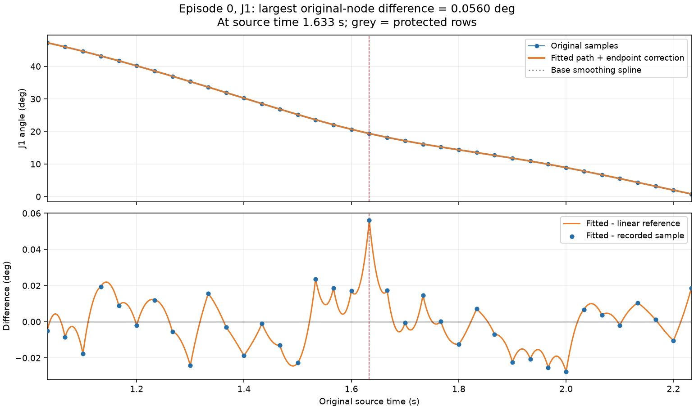
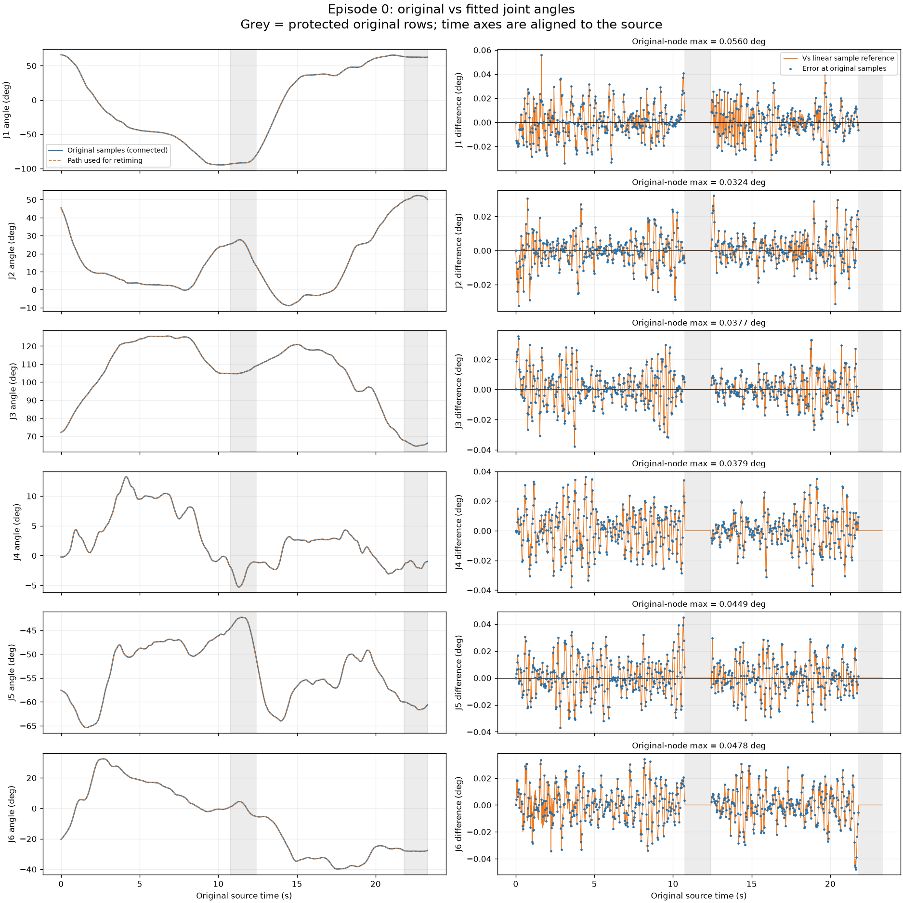
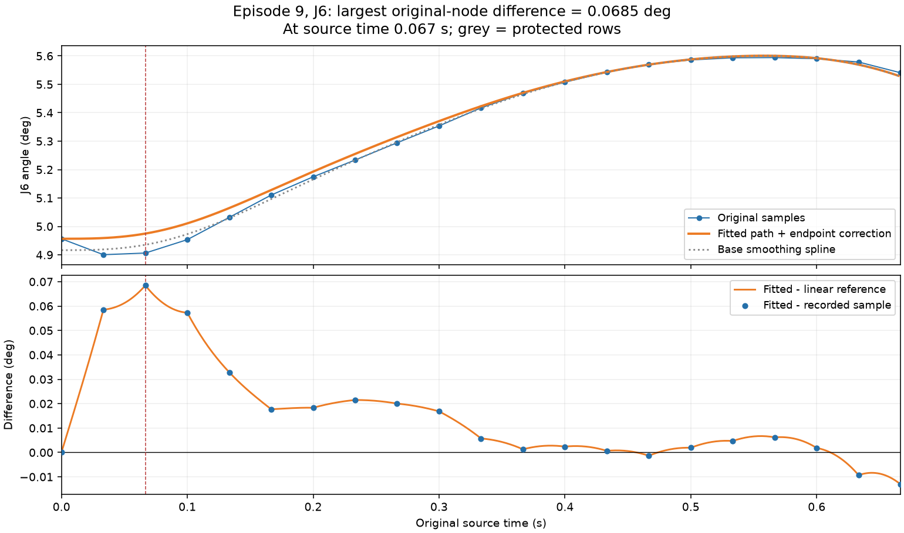
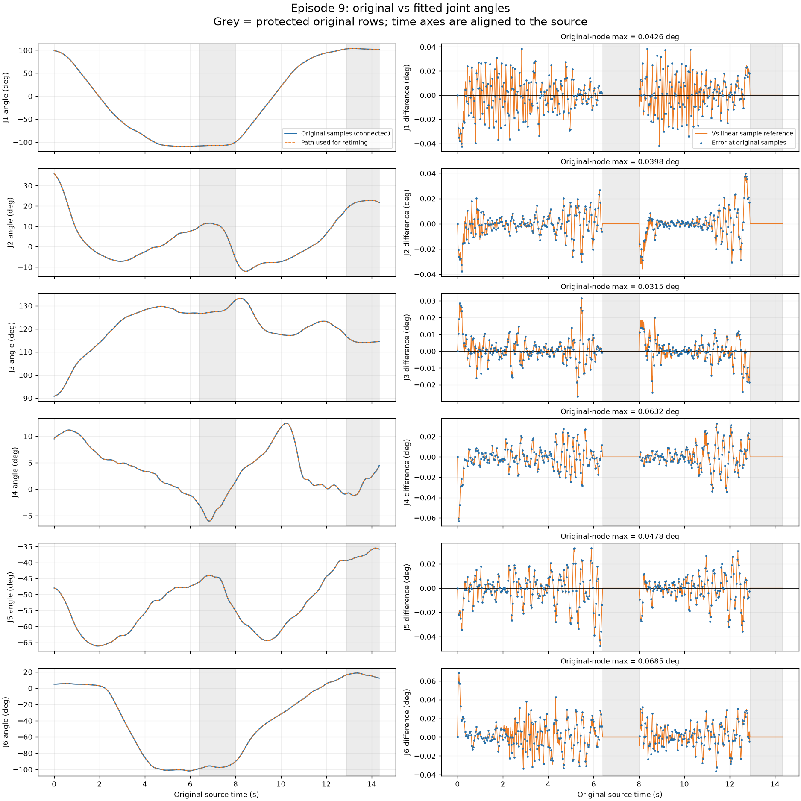
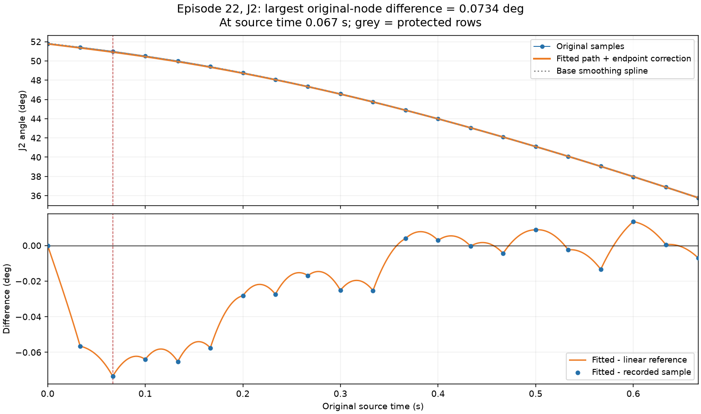
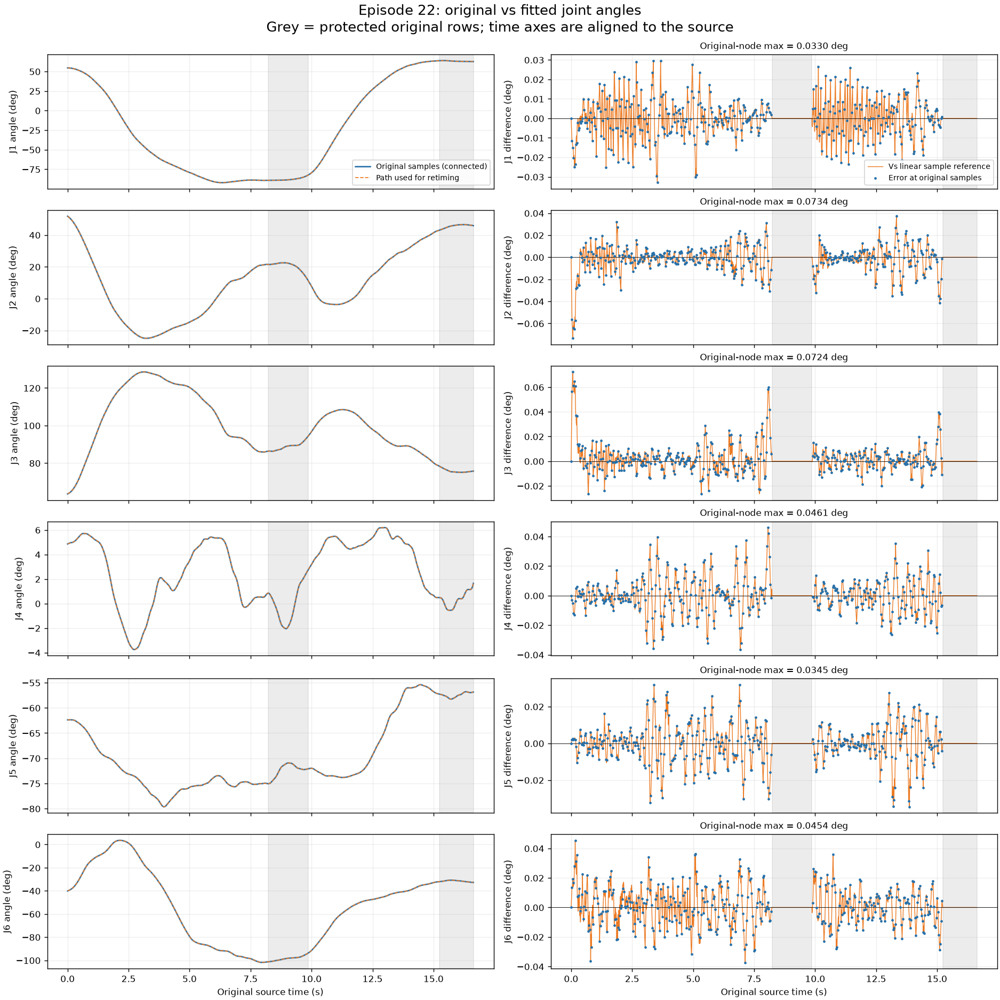
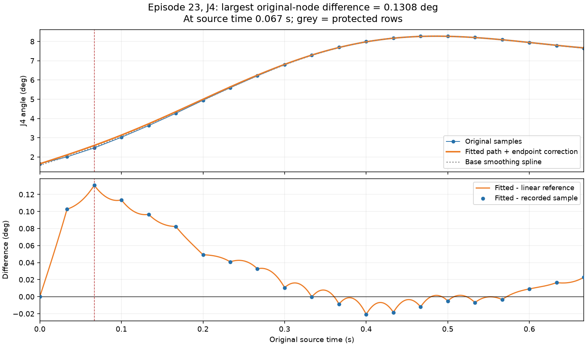
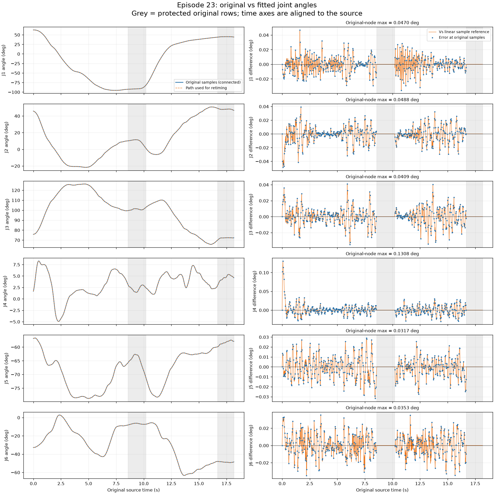

2026-11-24 · 20261102 数据集 · 全部 34 条扫描，展示 4 条代表轨迹
蓝色是原始采样关节角，橙色是本次加速实际采用的拟合路径，包含端点修正。横轴统一为原始时间 s，避免把“执行更快”误当成“路径偏离”。 灰色区域为保护窗口，实际输出保留原始帧；图中的直线只用于连接离散采样点。局部图的灰色点线是端点修正前的基础平滑样条。
使用既有实验的同一份代码及参数重建曲线：λ=0.0001，端点混合长度至多 0.5 秒。已逐条对照 frame_map 与真实输出关节角，误差在 float32 舍入量级。 本批没有删除悬停点。所有角度单位为度，episode 从 0 编号。
选择第一条 Episode 0、此前加速度异常的 Episode 9、视频示例 Episode 22，以及全批原始节点拟合偏差最大的 Episode 23；如重合则补入下一条偏差较大的轨迹。
| Episode | 平均绝对偏差° | P99偏差° | 最大偏差° | 最大偏差位置 | 相邻点范围外° |
|---|---|---|---|---|---|
| 0 | 0.00931 | 0.03301 | 0.05604 | J1 / 1.633s | 0.05604 |
| 9 | 0.00923 | 0.03770 | 0.06849 | J6 / 0.067s | 0.06724 |
| 22 | 0.00900 | 0.03680 | 0.07343 | J2 / 0.067s | 0.06400 |
| 23 | 0.00911 | 0.03298 | 0.13075 | J4 / 0.067s | 0.10523 |
前三项偏差只统计非保护原始节点的六关节数据，避免保护帧的零偏差稀释结果。全部 34 条指标 JSON
“相邻点范围外”表示曲线超出相邻两个原始角度的区间。它可能来自平滑偏移或点间峰值，不能直接认定为新增过冲或碰撞。 “全程角度范围外”只检查是否超出该关节整条原始轨迹的最大/最小角度。即使不超出，也可能改变局部避让。
点间误差图以原始点的直线连接为参照，真实采样间运动未知；每个原始间隔细分 20 段进行数值检查，不是严格连续上界。 这些角度对比尚不能证明避障距离或运动细节足够保留，也不评估实机跟踪过冲。Episode 9 的加速度超限属于另一个指标，角度偏差小不代表加速度合格。
最大原始节点偏差 0.05604°，位于 J1，原始时间 1.633 秒。


| 关节 | 平均绝对偏差° | P99偏差° | 最大偏差° | 相邻点范围外° | 全程角度范围外° |
|---|---|---|---|---|---|
| J1 | 0.01028 | 0.03535 | 0.05604 | 0.05604 | 0.00000 |
| J2 | 0.00674 | 0.02880 | 0.03237 | 0.03221 | 0.00000 |
| J3 | 0.00842 | 0.03131 | 0.03771 | 0.03771 | 0.00000 |
| J4 | 0.01010 | 0.03401 | 0.03792 | 0.03792 | 0.00000 |
| J5 | 0.01025 | 0.03216 | 0.04493 | 0.03963 | 0.00541 |
| J6 | 0.01009 | 0.03400 | 0.04778 | 0.04029 | 0.01007 |
下载对比数组 NPZ（包含原始角度、同一时刻拟合角度、密集曲线和保护标记）
最大原始节点偏差 0.06849°，位于 J6，原始时间 0.067 秒。


| 关节 | 平均绝对偏差° | P99偏差° | 最大偏差° | 相邻点范围外° | 全程角度范围外° |
|---|---|---|---|---|---|
| J1 | 0.01256 | 0.03937 | 0.04255 | 0.04193 | 0.00718 |
| J2 | 0.00732 | 0.03665 | 0.03982 | 0.03053 | 0.00000 |
| J3 | 0.00524 | 0.02667 | 0.03150 | 0.03150 | 0.01590 |
| J4 | 0.00900 | 0.03430 | 0.06322 | 0.06322 | 0.00348 |
| J5 | 0.00984 | 0.03559 | 0.04776 | 0.04776 | 0.00366 |
| J6 | 0.01139 | 0.04095 | 0.06849 | 0.06724 | 0.00000 |
下载对比数组 NPZ（包含原始角度、同一时刻拟合角度、密集曲线和保护标记）
最大原始节点偏差 0.07343°，位于 J2，原始时间 0.067 秒。


| 关节 | 平均绝对偏差° | P99偏差° | 最大偏差° | 相邻点范围外° | 全程角度范围外° |
|---|---|---|---|---|---|
| J1 | 0.00831 | 0.02942 | 0.03298 | 0.02969 | 0.00000 |
| J2 | 0.00913 | 0.05565 | 0.07343 | 0.06400 | 0.01023 |
| J3 | 0.00829 | 0.05994 | 0.07239 | 0.06126 | 0.00452 |
| J4 | 0.00924 | 0.03647 | 0.04607 | 0.04347 | 0.00244 |
| J5 | 0.00814 | 0.03176 | 0.03451 | 0.03436 | 0.00000 |
| J6 | 0.01092 | 0.03585 | 0.04540 | 0.03725 | 0.01637 |
下载对比数组 NPZ（包含原始角度、同一时刻拟合角度、密集曲线和保护标记）
最大原始节点偏差 0.13075°，位于 J4，原始时间 0.067 秒。


| 关节 | 平均绝对偏差° | P99偏差° | 最大偏差° | 相邻点范围外° | 全程角度范围外° |
|---|---|---|---|---|---|
| J1 | 0.00827 | 0.02975 | 0.04696 | 0.04696 | 0.00251 |
| J2 | 0.00889 | 0.04079 | 0.04879 | 0.03928 | 0.00362 |
| J3 | 0.00842 | 0.03343 | 0.04092 | 0.04092 | 0.00489 |
| J4 | 0.00994 | 0.06578 | 0.13075 | 0.10523 | 0.00259 |
| J5 | 0.00857 | 0.02800 | 0.03172 | 0.03172 | 0.00001 |
| J6 | 0.01057 | 0.03286 | 0.03527 | 0.03527 | 0.01524 |
下载对比数组 NPZ（包含原始角度、同一时刻拟合角度、密集曲线和保护标记）